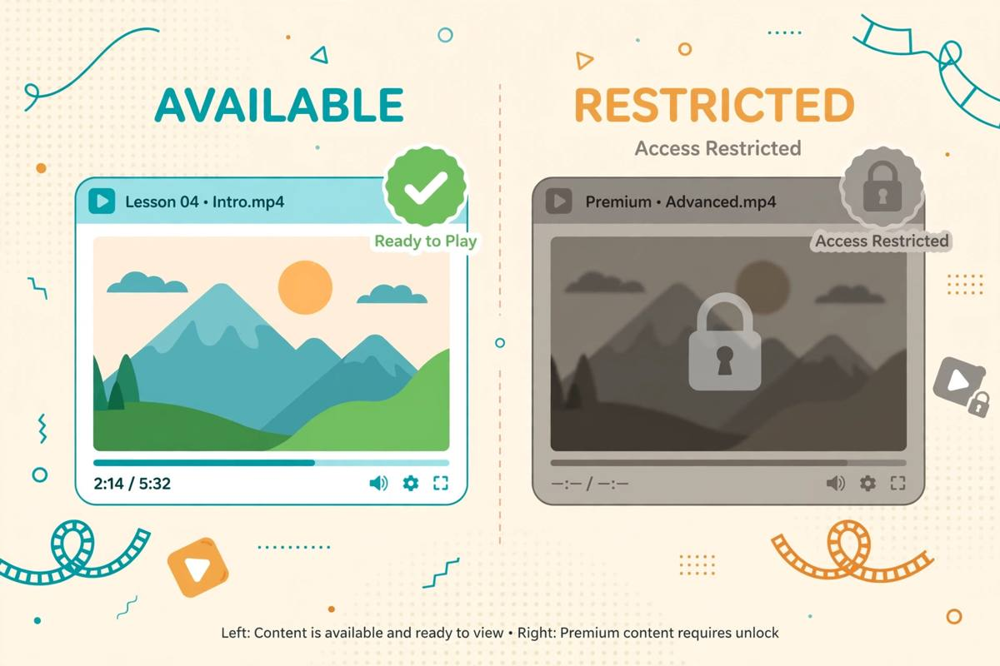

I Checked 8 “Free” AI Video Generators: The No-Sign-Up Truth (2026)
This is the article I didn't want to write. After testing no-signup AI chatbots and no-signup AI image generators — both categories with real winners — I went after video. I checked 8 tools that market themselves as free AI video generation with no sign up. The honest result: almost none of them let you generate a video without an account. This is the report anyway, because "don't waste your time" is also a test result.
Let me be upfront about what this test is and isn't. With chatbots, I could hold full conversations. With image generators, I ran identical prompts and compared outputs. Video is different: a single generation can take minutes, and most tools gate everything behind identity first. So this test measured the thing that matters before any of that — can you get from landing page to a generated video without creating an account? For each tool: open the site fresh, find the generation interface, click Generate, and write down exactly where the wall appears. No accounts created at any point.
The short answer
Of the 8 tools checked, zero offered unlimited no-signup video generation, and only two let me reach a generation screen without logging in — both with heavy restrictions attached. The other six demanded an email, a Google login, or a full account before rendering a single frame. If you searched "free ai video generator no sign up" hoping for the video equivalent of Pollinations.ai, I'm sorry: that tool doesn't exist right now.
This isn't an accident or a conspiracy. It's economics, and understanding the economics will save you from every "free video AI" landing page forever. More on that below.
How I checked
Fresh browser session, no logins, no cookies from previous visits. For each tool:
- Opened the homepage and looked for the generation entry point (not the marketing "Try free" button — the actual creator).
- Clicked through to the prompt box or upload screen, the way a real user would.
- Noted the exact moment an account was demanded: before typing a prompt, after typing it, or at download.
- Recorded any visible free-tier terms: credits per day, watermarks, resolution caps.
The tools: PixVerse, Vidu, Pollo AI, Hailuo AI, Luma Dream Machine, Pika, FlexClip, and InVideo. All checked in October 2026. Providers change policies constantly — treat this as a snapshot, not scripture.
The signup-wall brigade: 6 tools, 6 login forms
Pika, Luma, Runway-class tools: account before anything
Pika and Luma Dream Machine are the names everyone searches for, so let's get them out of the way first. Both present beautiful landing pages with big "Generate" energy. Both, when you actually try to generate, route you to authentication first — Google login, email signup, the full flow. There is no anonymous generation path I could find. This is consistent across the flagship video models: the companies training these models treat every generation as a billed event, and billed events need an identity attached. Fair enough from their side; disqualifying from ours.
Vidu, Hailuo AI, PixVerse: the same wall, different paint
Vidu, Hailuo (MiniMax), and PixVerse all market generous free tiers — and the free tiers are real, with daily credits and decent output. But "free" and "no sign up" are different promises, and these tools only keep the first one. Each requires account creation before the first generation: email or social login, then credits appear in your new account. The free tier is genuinely usable once you're in — PixVerse's free credits refresh, Hailuo's output quality is strong — but by this site's strict definition (landing page to finished video, no identity), they fail. If you're willing to create an account, they're among the best free options anywhere. That's just a different article.
Pollo AI: aggregator with an account gate
Pollo AI positions itself as an all-in-one video studio with multiple models under one roof. Interesting product. Same gate: the generation flow requires sign-in before producing anything. Aggregators have even less incentive to allow anonymous use — they're reselling API access, and every anonymous generation is pure cost.
The pattern, same as with chatbots and image generators: the marketing says "free," the flow says "free after registration." Video just does it earlier and harder — the wall comes before the prompt box, not after the third generation.
Quick comparison
| Tool | Account needed? | Where's the wall? | Free tier (with account) |
|---|---|---|---|
| Pika | Yes | Before generating | Yes, credit-based |
| Luma Dream Machine | Yes | Before generating | Yes, limited |
| Vidu | Yes | Before generating | Yes, daily credits |
| Hailuo AI | Yes | Before generating | Yes, generous |
| PixVerse | Yes | Before generating | Yes, refreshing credits |
| Pollo AI | Yes | Before generating | Yes, trial credits |
| FlexClip | For export | At download/export | Yes, watermarked |
| InVideo | For export | At download/export | Yes, watermarked |

The 2 closest things to no-signup video
FlexClip & InVideo — generate first, pay with identity at export
These two are editors with AI features, not pure text-to-video models, which is exactly why they can afford looser gates. You can open the editor, use templates, and assemble a video without an account. The wall arrives at the moment that matters: exporting or downloading your finished video requires sign-in, and the free export carries a watermark. Is that "no sign up"? By our strict definition, no — you can't walk away with a video anonymously. But if your standard is "let me try the thing before deciding," they're the most permissive of the eight. Just know the watermark is doing the real upselling here, not the signup form.
Why video is different (the economics)
Here's why this category may never get its Pollinations.ai moment. A chatbot response costs fractions of a cent. An image costs a few cents. A 5-second AI video can cost dollars in GPU time — two orders of magnitude more than an image. Nobody hands out dollar bills to anonymous visitors; the abuse would be instant and total. Every "free" video tool is therefore either (a) venture-subsidized customer acquisition with mandatory accounts, or (b) an editor upselling templates and watermarks. The anonymous-generation model that works for text and images breaks on video economics. Expect the signup wall to stay.
This also reframes what "free AI video generator no sign up" results are actually selling you. They're not lying about "free" — most have real free tiers. They're blurring "no sign up" into "no credit card," which is a different promise wearing similar clothes. Now you know the difference, and you'll spot it in ten seconds on any landing page: find the Generate button, click it, and watch what appears. Login form or prompt box — that's the whole test.
What to use instead
If you need motion without the account tax, two honest alternatives:
Animate stills. Generate the image with a genuinely no-signup tool — we tested 5 image generators, 3 passed with zero accounts — then animate it with a free editor's trial or Ken Burns-style pan/zoom. Not true AI video, but for social posts and thumbnails it's often enough, and the whole pipeline stays account-free.
Pay with an account, not money. If the video matters, Hailuo AI and PixVerse have the most generous free tiers of the tools checked — real daily credits, good output. Creating a throwaway account for a genuinely free tier is a reasonable trade. Just don't confuse it with no-signup; go in clear-eyed.
FAQ
Is there any truly no-signup AI video generator?
As of October 2026, I couldn't find one that lets you go from landing page to finished, downloadable video with zero identity. The closest are editors (FlexClip, InVideo) that let you build without an account but require sign-in at export. Pure text-to-video models all gate before generating.
Why do all the "free" video tools need my email?
GPU cost. A few seconds of AI video costs roughly 100x what an AI image costs to render. Free tiers exist as customer acquisition; anonymous generation would be pure loss with no upside. The account is how they cap abuse and convert you later.
Which free AI video generator is best if I do sign up?
Of the tools checked, Hailuo AI (MiniMax) and PixVerse had the most generous free tiers — real daily credits, not demo scraps. Vidu is strong too. All require accounts; pick by output style preference, since the free economics are similar.
Do the watermarked exports ever make sense?
For drafts, storyboards, and "is this idea worth pursuing" tests — yes. For anything public, no: a watermarked video advertises the tool, not you. Either pay, use a free tier properly, or stick to the animate-stills pipeline above.
Will this change? Will no-signup video ever exist?
Only if generation costs collapse by another order of magnitude, or someone subsidizes anonymous generation as a loss leader the way Pollinations does for images. Don't hold your breath — but the day it happens, it'll be on our directory first.
How is this different from your image generator test?
Night and day. Image generation has three tools that pass the strict no-signup definition with genuinely good output. Video has zero. Same test standard, opposite result — which is exactly why the standard matters.
The takeaway
Eight tools checked, zero passed the strict no-signup bar. Six demand an account before generating; two let you build but not export. This isn't a failure of the test — it's the finding. AI video is the one category where "free" and "no sign up" currently don't coexist, because the compute economics don't allow it.
The practical move: stop hunting for a unicorn. Either use the genuinely free tiers with an account (Hailuo, PixVerse), or keep your pipeline account-free with no-signup image generation plus basic animation. And the next time a landing page promises "free AI video, no sign up" — click Generate first, read second. Ten seconds tells you everything.
Checked 2026-10-11 · Providers change their signup policies — we re-verify regularly.